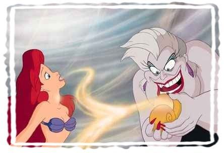

For many of the Disney Princesses,
their entire existence centred around being beautiful and getting a man.
That's what they sang about, dreamed about and in some of their cases, struggled to obtain.
For many of the Disney Princesses,
their entire existence centred around being beautiful and getting a man.
That's what they sang about, dreamed about and in some of their cases, struggled to obtain.
Ariel left her loving father to marry a man who she knows very little about and is only attracted because of his looks.
Ariel: I can give up my voice, I don't need my voice or a personality to win over a man I have the looks!! 
Aurora: My man will come and rescue me, there is no need for me to take a hand and get involved in my own life. YAY!
 Snow White: You are right Aurora! I will happily wait to be rescued, after I have eaten a poisoned apple.
I can be very gullible sometimes... It's always best to have a man look after me!
Snow White: You are right Aurora! I will happily wait to be rescued, after I have eaten a poisoned apple.
I can be very gullible sometimes... It's always best to have a man look after me!